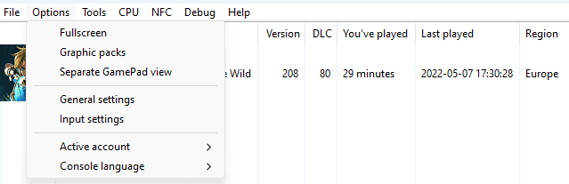
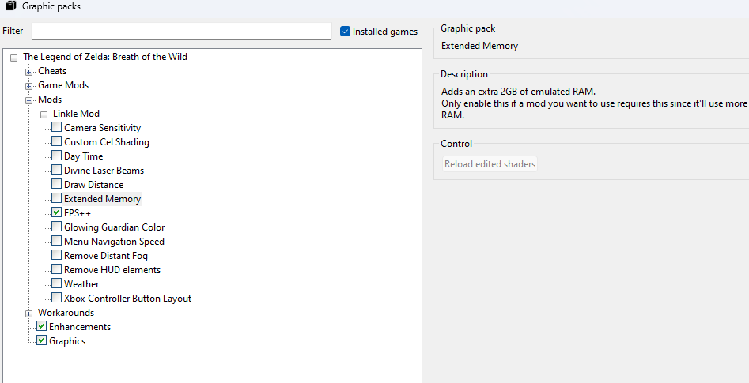
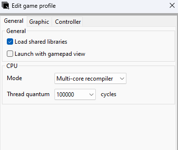

Introduction
After installing Cemu, the game is fully playable, but not optimized and good looking.
Graphics Packs
To enable graphics packs, go into the Option drop-down menu, and go into the Graphics Pack option.

Then open Breath of the Wild drop-down menu, and enable "Enhancements" and "Graphics". Select "Graphics" to change his settings,
and then in the "Resolution" drop-down menu select the resolution you want.
In "Enhancements" settings, select Serfrost's Preset in the first drop-down menu.
Then open the Mods menu in the main graphics pack window, and then enable FPS++.

If you have a potato computer, or you want a stable framerate, change the max Framerate in FPS++ Graphics Packs' settings.
Thread Cycles
Then, Right Click on Breath of the Wild icon, and select "Edit Game Profile", and in Mode change to "Multi Core Recompiler",
and in "Thread Quantum" change it to 100000.

Finish Line
You've now setuped Breath of the Wild ! You can now just launch the game and enjoy this masterpiece.